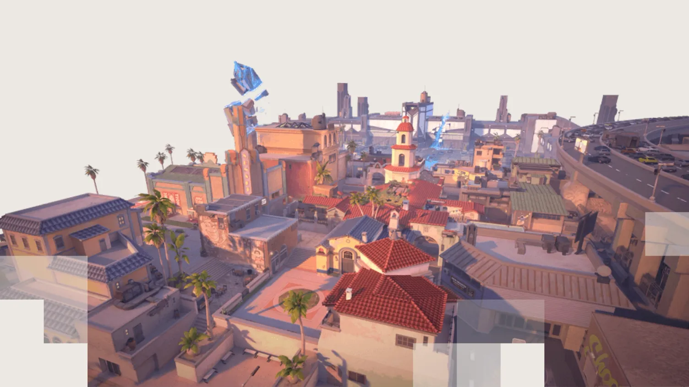
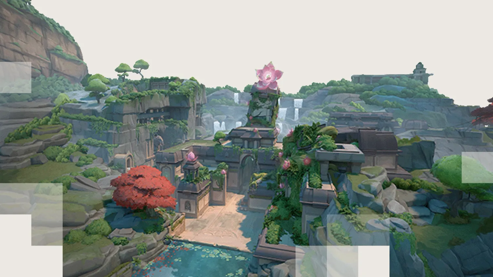
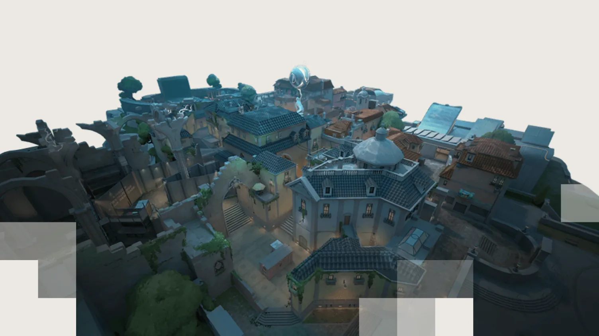
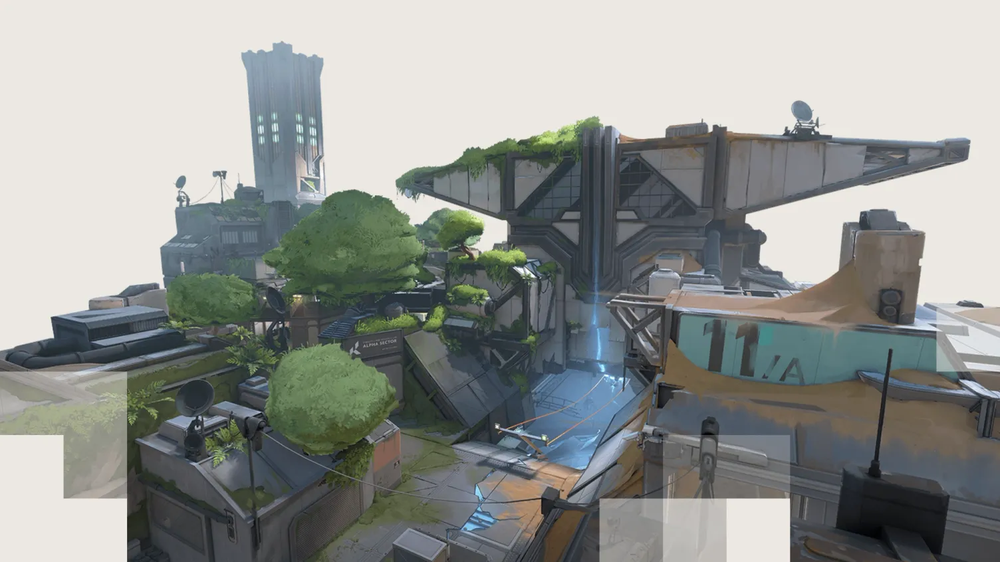
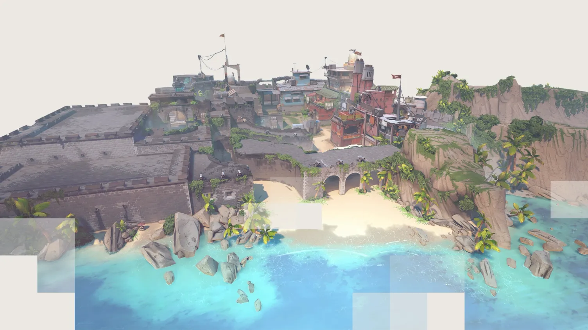
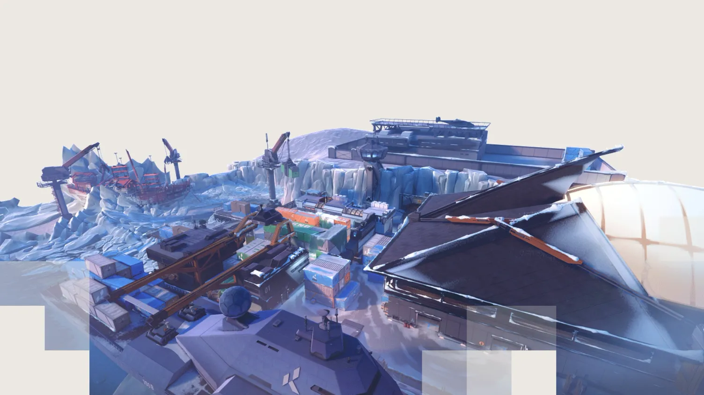
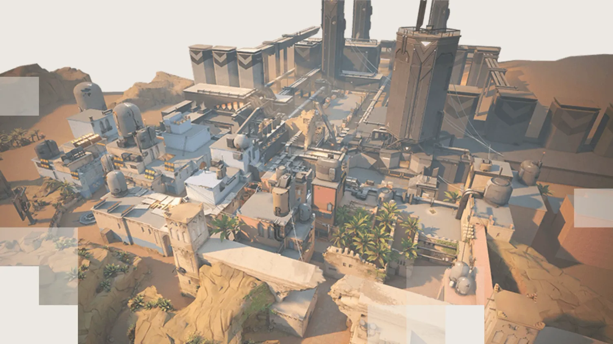
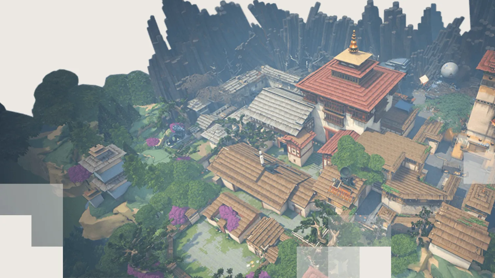
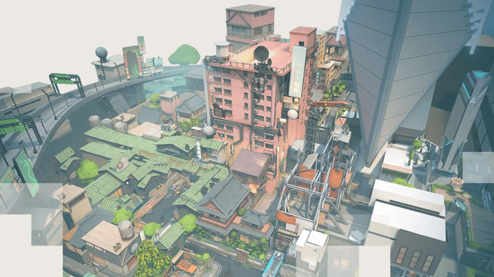
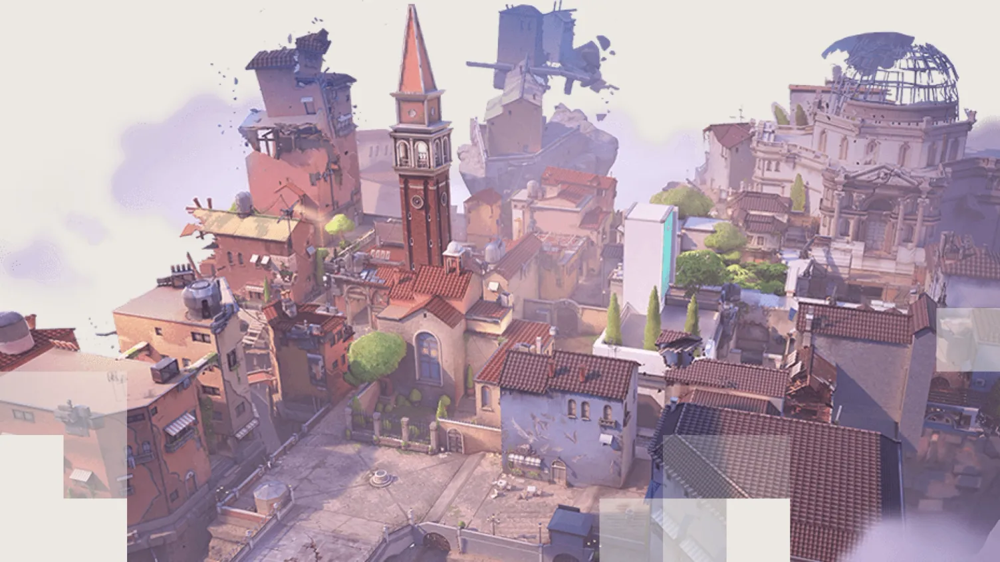

MAPS
SUNSET
A disaster at a local kingdom facility threatens to engulf the whole neighborhood. Stop at your favorite food truck then fight across the city in this traditional three lane map.
LOTUS
A mysterious structure housing an astral conduit radiates with ancient power. Great stone doors provide a variety of movement opportunities and unlock the paths to three mysterious sites.
PEARL
Attackers push down into the Defenders on this two-site map set in a vibrant, underwater city. Pearl is a geo-driven map with no mechanics. Take the fight through a compact mid or the longer range wings in our first map set in Omega Earth.
FRACTURE
A top secret research facility split apart by a failed radianite experiment. With defender options as divided as the map, the choice is yours: meet the attackers on their own turf or batten down the hatches to weather the assault.
BREEZE
Take in the sights of historic ruins or seaside caves on this tropical paradise. But bring some cover. You'll need them for the wide open spaces and long range engagements. Watch your flanks and this will be a Breeze.
ICEBOX
Your next battleground is a secret Kingdom excavation site overtaken by the arctic. The two plant sites protected by snow and metal require some horizontal finesse. Take advantage of the ziplines and they’ll never see you coming.
BIND
Two sites. No middle. Gotta pick left or right. What’s it going to be then? Both offer direct paths for attackers and a pair of one-way teleporters make it easier to flank.
HAVEN
Beneath a forgotten monastery, a clamour emerges from rival Agents clashing to control three sites. There’s more territory to control, but defenders can use the extra real estate for aggressive pushes.
SPLIT
If you want to go far, you’ll have to go up. A pair of sites split by an elevated center allows for rapid movement using two rope ascenders. Each site is built with a looming tower vital for control. Remember to watch above before it all blows sky-high.
ASCENT
An open playground for small wars of position and attrition divide two sites on Ascent. Each site can be fortified by irreversible bomb doors; once they’re down, you’ll have to destroy them or find another way. Yield as little territory as possible.
